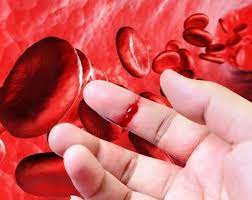
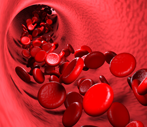

E.E. José Vieira de Moraes 3°J
Hemofilia é uma doença genético-hereditária que se caracteriza por desordem no mecanismo de coagulação do sangue e manifesta-se quase exclusivamente no sexo masculino.
Nos quadros graves e moderados, os sangramentos repetem-se espontaneamente. Em geral, são hemorragias intramusculares e intra-articulares que desgastam primeiro as cartilagens e depois provocam lesões ósseas. Os principais sintomas são dor forte, aumento da temperatura e restrição de movimento. As articulações mais comprometidas costumam ser joelho, tornozelo e cotovelo.
Além dos sinais clínicos, o diagnóstico é feito por meio de um exame de sangue que mede a dosagem do nível dos fatores VIII e IX de coagulação sanguínea.
O tratamento da hemofilia evoluiu muito e, basicamente, consiste na reposição do fator anti-hemofílico. Paciente com hemofilia A recebe a molécula do fator VIII, e com hemofilia B, a molécula do fator IX. Os hemocentros distribuem gratuitamente essa medicação que é fornecida pelo Ministério da Saúde. Quanto mais precoce for o início do tratamento, menores serão as sequelas que deixarão os sangramentos.
 